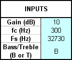
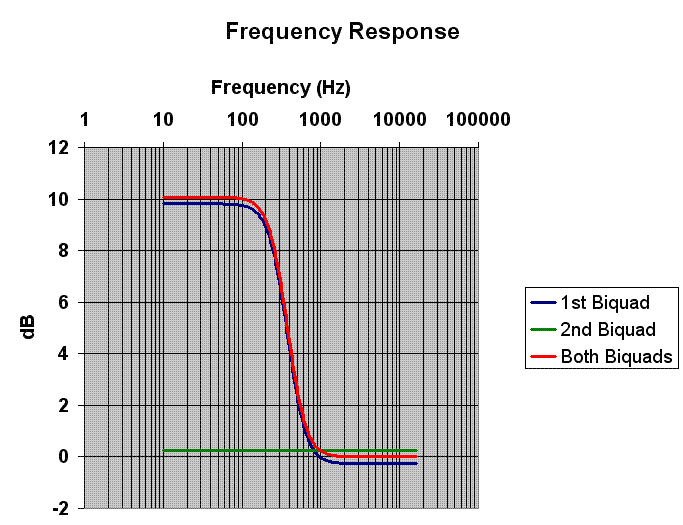

TWL の拡張機能として、マイクサンプリングデータやスピーカー出力データに対し IIRフィルタをかけることができます。
IIR フィルタの設定に関しては、SNDEX_SetIirFilter[Async]() を参照して下さい。
ここでは、TwlSDK に付属している IIR_FilterBuilder の使い方について説明します。
$TwlSDK/docs/TechnicalNotes/IIR_FilterBuilder.xls は IIR フィルタのパラメータを計算するための Excel シートです。
算出されたパラメータは SNDEX_SetIirFilter[Async]() のパラメータとして使用できます。
本シートを利用するためには、Excel メインメニューの「ツール」→「アドイン」から「分析ツール」を有効にする必要があります。（Excel 2003）
以下の3つのシートの中から使用したいシートを選択して下さい。
| シート名 | 計算可能なフィルタ種類 |
|---|---|
| Shelf Filters | Bass Shelf Filter、Treble Shelf Filter |
| EQ Filters | Band Pass Filter、Band Eliminate Filter |
| Butterworth Filters | High Pass Filter、Low Pass Filter |
シートの中で基本的に入力するのは下図の水色の箇所のみです。入力項目はシートによって若干異なります。
各シートで入力できる値は以下の表の通りです。
| 入力項目 | 説明 |
|---|---|
| Gain (dB) | 振幅の増幅を指定します。 |
| fc (Hz) | カットオフ周波数（3dB の変化が生じる周波数）を指定します。 |
| Fs (Hz | サウンドサンプリングレートを指定します（47610 or 32730）。 |
| Bass/Treble | Bass Shelf Filter であれば B、Treble Shelf Filter であれば T を指定します。 |
| 入力項目 | 説明 |
|---|---|
| Gain (dB) | 振幅の増幅を指定します。 |
| BW (Hz) | 中心周波数から 3dB 変化するところまでの周波数の幅を指定します。 |
| fc (Hz) | 振幅を変化させる中心周波数を指定します。 |
| Fs (Hz | サウンドサンプリングレートを指定します（47610 or 32730）。 |
| 入力項目 | 説明 |
|---|---|
| High/Low | High Pass Filter であれば H、Low Pass Filter であれば L を指定します。 |
| fc (Hz) | カットオフ周波数（3dB の変化が生じる周波数）を指定します。 |
| Fs (Hz | サウンドサンプリングレートを指定します（47610 or 32730）。 |
以降では、Shelf Filters シートを例に説明を進めます。
入力項目に左図のように値を入力すると周波数応答特性グラフ、1st Biquad パラメータ、2nd Biquad パラメータがリアルタイムに更新されます。
左図が算出された IIR フィルタ用のパラメータです（1st Biquad）。
N0 〜 D2 がそれぞれ SNDEXIirFilterParam 構造体の no〜d2 に対応しています。
ただし、Values を SNDEXIirFilterParam 構造体に入れる際にはu16型へのキャストが必要になります。
Hex はそのまま渡すことができますので、こちらをお使い下さい。
このフィルタを適用した場合の周波数反応が下図の青色のグラフです。300Hz 付近を境に低域が 10dB 程度増幅されることが分かります。
青いグラフをよく見ると、フィルタの副作用で高域部分が 0.1dB 程度マイナス側に入っていることが分かります。
IIR フィルタをさらにもう一段使用してこれを補正することができます。
左図の 2nd Biquad はそのための IIR フィルタパラメータです。
N3〜D5 はそれぞれ SNDEXIirFilterParam 構造体の no〜d2 に対応しています。
ただし、Values を SNDEXIirFilterParam 構造体に入れる際にはu16型へのキャストが必要になります。
Hex はそのまま渡すことができますので、こちらをお使い下さい。
2nd Biquad のみの周波数反応が緑色のグラフです。全周波数帯域を 0.1dB 程度増幅しています。
そして 1st Biquad と 2nd Biquad の両方を適用した結果が赤色のグラフです。
1st Biquad の結果だけでも問題なければ 2nd Biquad は必ずしも適用する必要はありません。
SNDEXIirFilterParam 構造体 に算出したパラメータを設定する際に、以下のように注意すべきことがあります。
2009/02/19 本シートの自動計算を有効にするための Excel の設定について追記
2008/09/10 算出したパラメータを使う際の注意事項追記
2008/09/06 初版